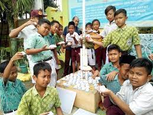
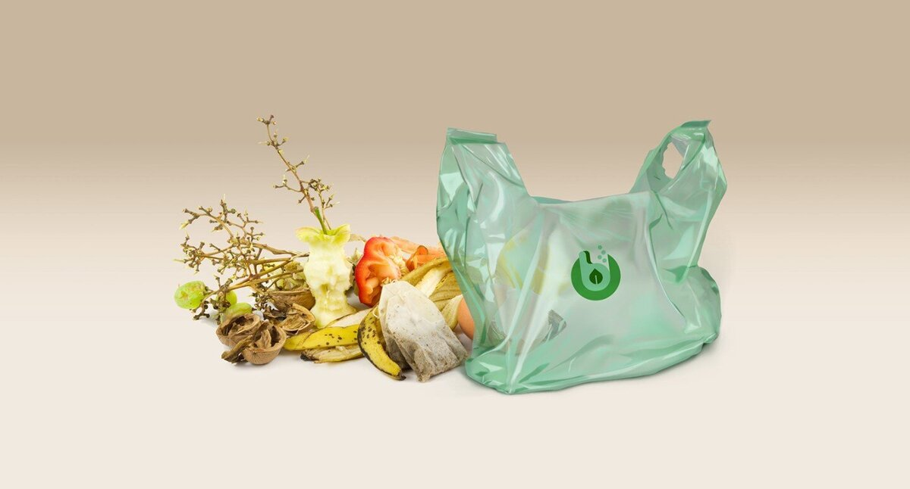
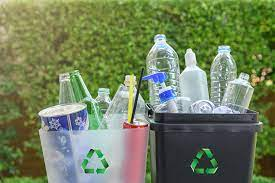
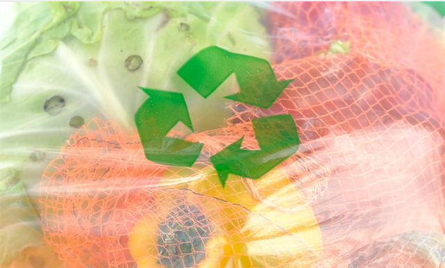
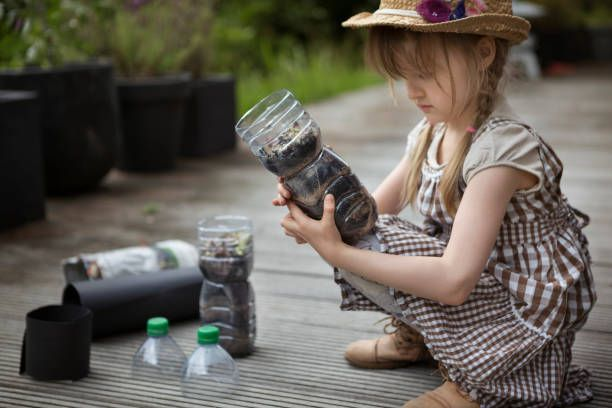

Eco
Savers
Beranda
Layanan
Informasi
Berita
Tentang Kami
Berita

18/10/2023
Sekolah Jadi Titik Awal Terbaik untuk Ajarkan Daur Ulang Sampah
20/07/2023
Daur Ulang Sampah: Pengertian, Manfaat, dan Cara

05/10/2023
Kantong ”Biodegradable” Tidak Direkomendasikan untuk Daur Ulang Sampah

04/04/2023
Daur ulang sampah plastik, Memanfaatkan Sampah Plastik Daur Ulang

16/10/2023
5 Contoh Recycle yang Bisa Dilakukan Di Rumah

17/08/2019
10 Ide Daur Ulang Sampah Plastik yang Fungsional dan Mudah dibuat